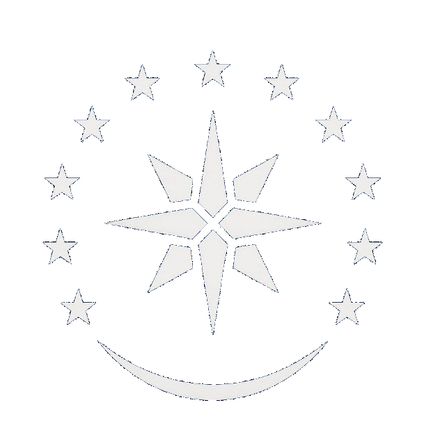
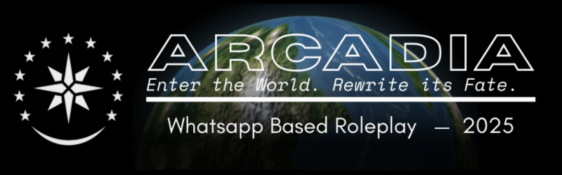
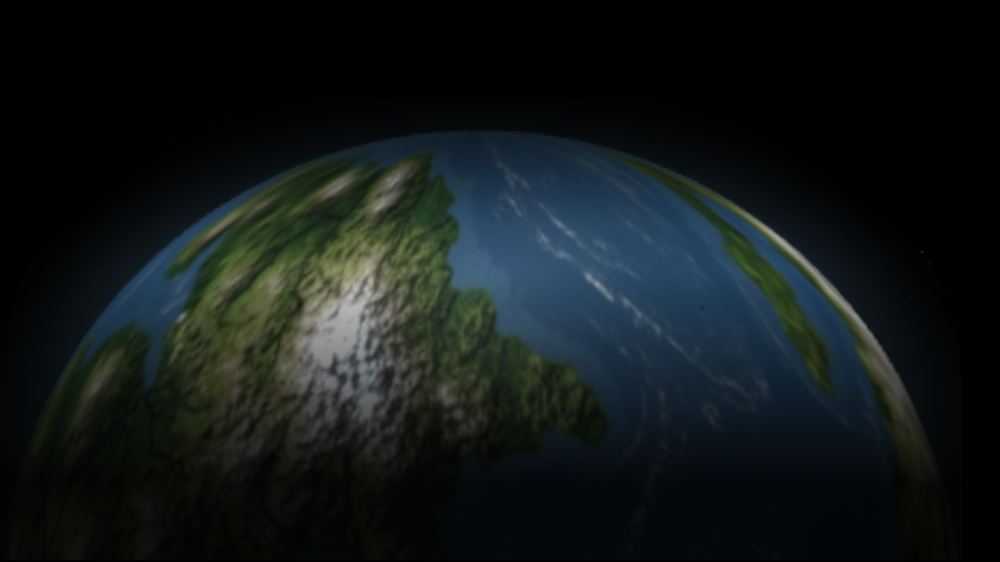

Dunia Kita



Arcadia ialah Komunitas Roleplay Negara fiksi yang menyediakan berbagai sistem kompleks yang cukup imersif dan "efisien" sehingga dapat dimainkan siapa saja. Arcadia berbasis di Platform Whatsapp, sehingga dapat dijangkau banyak player.

Dalam lembar awal sejarah dunia, Arcadia bukanlah tanah yang dihuni oleh satu ras tunggal, melainkan panggung besar evolusi yang melahirkan lima cabang makhluk cerdas: Homo Eldarin, Homo Daemonis, Homo Orchidae, Homo Sapiens, dan Homo Velkari. Masing-masing muncul di wilayah yang berbeda, terbentuk oleh tekanan alam dan energi leyline yang mengalir di seluruh planet. Dari hutan berkabut Elyrathis lahirlah para Eldarin, makhluk spiritual dengan hubungan mendalam terhadap energi alam. Di selatan yang berapi dan tandus, Daemonis tumbuh dalam kerasnya dunia magma dan badai energi, menjadikan mereka simbol kekuatan mentah dan kehendak bertahan hidup. Sementara itu, Orchidae berkembang di lembah dan rimba lembab, membangun peradaban agraris berbasis kekuatan komunal yang menekankan harmoni antara tubuh, tanah, dan tradisi.
Ketika iklim mulai berubah dan daratan Arcadia saling terhubung, Homo Sapiens muncul sebagai spesies yang paling adaptif. Mereka tidak sekuat Orchidae, tidak secerdas Eldarin, namun mampu meniru, belajar, dan mengubah dunia dengan kecepatan yang belum pernah terjadi sebelumnya. Dari dataran terbuka dan lembah luas, manusia menjadi katalis revolusi yang membangun sistem logika dan mekanika hingga memicu kelahiran era mesin pertama. Di kutub barat, Velkari berevolusi dari manusia yang terisolasi selama ribuan tahun. Paparan aurora dan badai elektromagnetik mengubah tubuh dan pikirannya menjadi entitas yang berpikir cepat dan terstruktur, namun dingin dan terukur. Mereka menjadi ras yang menatap dunia dengan logika, bukan perasaan, melahirkan kecerdasan taktis dan ilmu awal yang mengarah pada konsep cybernetic arcanum.
Namun, seiring meningkatnya interaksi antar-ras, dunia Arcadia memasuki masa pergolakan besar yang dikenal sebagai Konvergensi Purba. Pertemuan budaya dan teknologi membawa kemajuan sekaligus kehancuran. Perang energi antara Eldarin dan Daemonis, ekspansi manusia yang agresif, serta perebutan wilayah leyline oleh Velkari dan Orchidae menciptakan luka yang dalam pada sejarah dunia. Dari kehancuran inilah lahir sebuah cita-cita baru, Arcadia, bukan sekadar nama dunia, tetapi simbol kesatuan dan keseimbangan antara akal, kekuatan, dan spiritualitas. Sebuah gagasan bahwa ras yang berbeda bukan untuk saling menguasai, melainkan saling memahami dan menjaga harmoni antara teknologi dan alam yang melahirkan mereka.